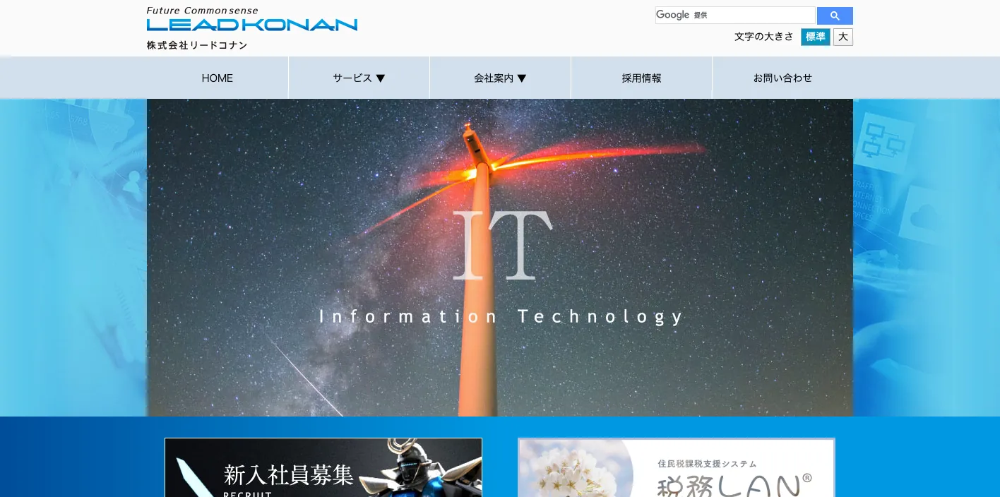
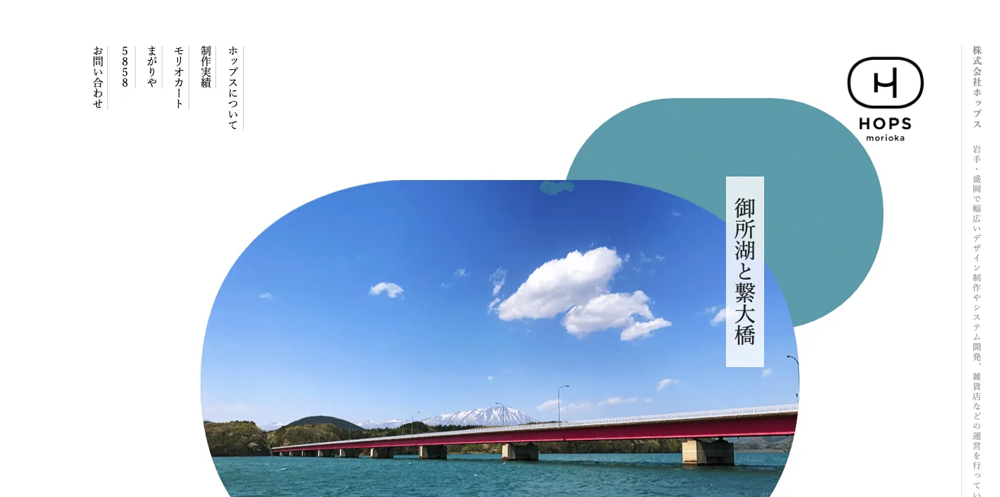
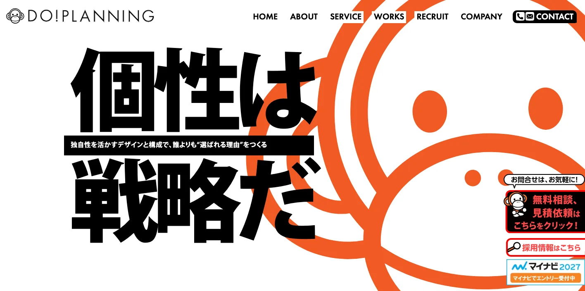
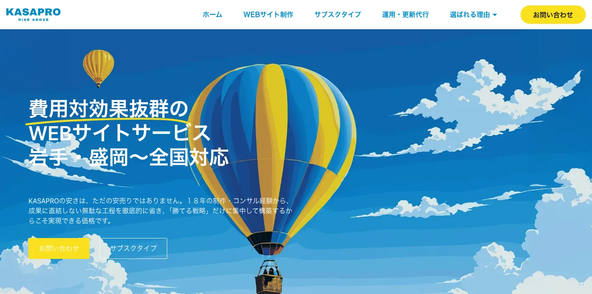
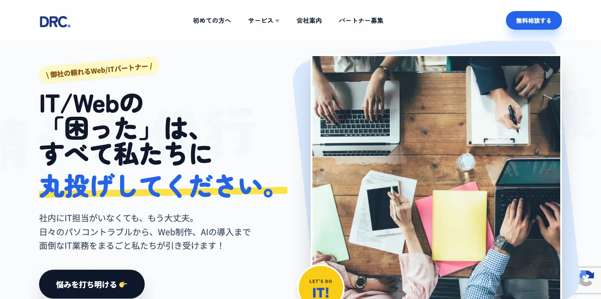
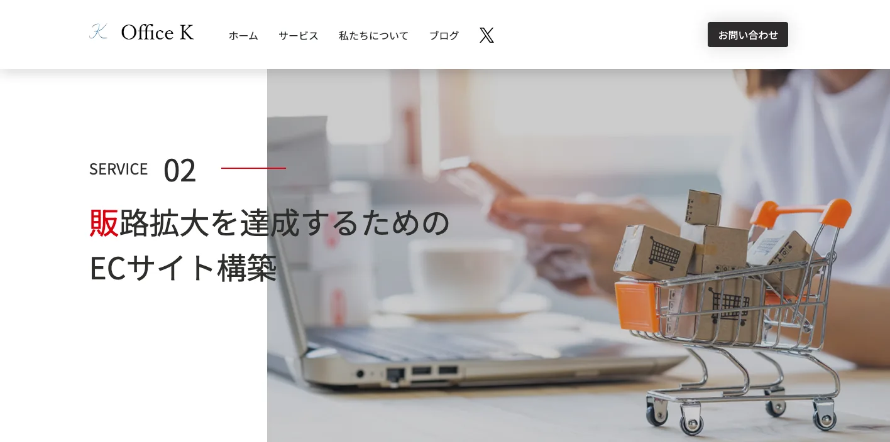
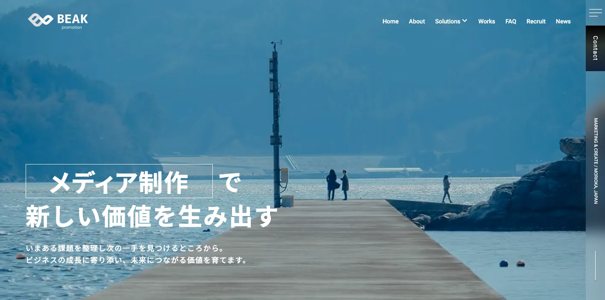
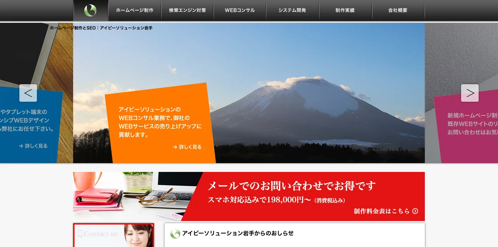
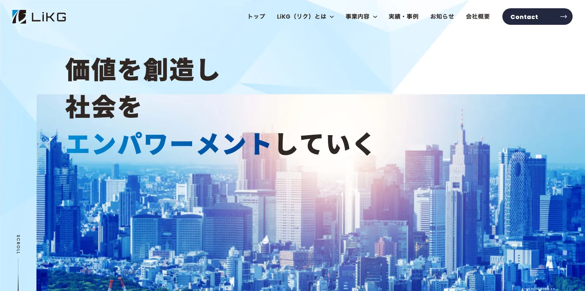

岩手県でおすすめのLLMO会社10選｜費用相場と選び方もわかりやすく解説

岩手県でLLMO会社を選ぶときは、単に「ホームページ制作に対応しているか」だけでは足りません。盛岡の都市型サービス、北上・奥州・金ケ崎のものづくり、平泉・花巻・八幡平の観光、三陸沿岸の水産・物流、県北の農畜産では、AI検索で比較される文脈が大きく違うからです。
岩手県の公式ページでは、令和7年10月1日現在の人口は1,126,813人、県内総生産は4兆7,971億円、産業別就業者数は第1次産業9.3％、第2次産業26.0％、第3次産業64.7％と整理されています。さらに令和6年の観光入込客数は実人数で16,907千人・回、延べ人数で26,441,111人回でした。人口減少が進む一方で、観光、農畜産、製造、港湾物流が強い県では、地域ごとの一次情報をAIに読み取れる形で整えることが重要です。
この記事では、岩手県で比較対象にしやすいLLMO会社を10社整理し、そのあとに比較ポイント、費用相場、FAQ、まとめの順で解説します。まずはLLMO対策の基本を押さえたい方は基礎記事から、東北・広域商圏との違いを見たい方は青森県の比較記事や北海道の比較記事もあわせて確認してみてください。現状把握から始めたい場合は無料LLMO診断も活用できます。
目次

岩手県でおすすめのLLMO会社10選
今回は、岩手県内に拠点や明確な支援実績があり、公開情報から支援領域を確認しやすい会社を中心に、LLMOを明示している全国対応会社も補完的に加えました。岩手県では、いきなりLLMO専業の施策だけを入れるより、既存サイトの改修、採用ページ、EC、地域別FAQ、商品情報の整理から始めるほうが現実的なケースが多いです。
特に、盛岡のサービス業、県南の自動車・半導体関連企業、三陸沿岸の水産・観光、県北の農畜産では必要な情報設計が変わります。まずは表で「自社に近い相談先か」「制作・運用・AI検索のどこまで任せるか」を確認してから、各社の特徴を見ると判断しやすいです。
| 会社名 | 拠点性 | 向いている企業 | 支援の軸 |
|---|---|---|---|
| 株式会社リードコナン | 盛岡本社・北上支社 | Webと業務システムをまとめて相談したい企業 | Web制作・Webシステム・IT支援 |
| 株式会社ホップス | 盛岡本社 | EC、地域産品、観光・文化系の発信を強化したい企業 | Web制作・CMS・SEO・EC |
| 株式会社ドゥ・プランニング | 岩手県内拠点 | 採用、医療、建設、店舗など訴求力を高めたい企業 | Web制作・採用サイト・販促デザイン |
| KASAPRO合同会社 | 盛岡市拠点 | 低予算で制作から運用まで任せたい中小企業 | 定額制Web制作・SEO・保守運用 |
| ディーアールシー | 盛岡市拠点 | Web、IT保守、AI導入を丸ごと相談したい企業 | Web戦略・SEO/MEO・AI導入・情シス代行 |
| Office K | 盛岡市拠点 | ECやDXも含めて販路拡大したい企業 | ホームページ制作・EC・DX支援 |
| ビークプロモーション株式会社 | 盛岡市拠点 | 中小企業の集客・採用・販促を仕組み化したい企業 | デジタルマーケティング・制作・仕組み化 |
| アイビーソリューション岩手 | 岩手対応 | 小規模サイトやECを費用感明確に進めたい企業 | ホームページ制作・SEO・EC |
| 株式会社LiKG | 全国対応 | AI検索向けの診断から記事制作まで任せたい企業 | LLMO診断・LLMO×SEO伴走 |
| 株式会社ジオコード | 全国対応 | SEOとAI最適化を実装込みで進めたい企業 | SEO・コンテンツ・AIO/LLMO |
株式会社AIMAは岩手本社の会社ではありませんが、全国対応でLLMO支援を提供しています。月額5万円のLLMO支援は初期費用なし・1ヶ月単位で始められ、質問設計、記事制作、引用チェックに絞って実務を進められます。盛岡、県南ものづくり、三陸沿岸、県北のように検索文脈が分かれる場合も、まず無料LLMO診断で優先順位を確認できます。
1. 株式会社リードコナン

株式会社リードコナンは、盛岡市に本社、北上市に支社を置くITソリューション会社です。WebLabの公式ページでは、Webサイト制作やWebシステム開発を行い、プランナー、デザイナー、コーダー、プログラマー、システムエンジニアがワンストップで対応すると案内しています。Webサイト制作ページでも、制作・リニューアル、CMS導入、プログラミング、データベース構築、公開後の更新や保守まで対応する方針が示されています。
岩手県では、Webサイトだけでなく業務システムや更新運用まで絡む案件が多くあります。県南の製造業、医療・介護、教育機関、自治体関連のように、情報発信と業務効率化を同時に見たい企業に向いています。
参考：株式会社リードコナン｜リードコナンWebLabについて
参考：株式会社リードコナン｜Webサイト 制作・リニューアル
2. 株式会社ホップス

株式会社ホップスは、盛岡市本宮に本社を置くWeb制作会社です。公式サイトでは、1996年設立以来、Webシステムの開発・構築・運用、Webマーケティング、Webプロモーション、CMS、SEO対策まで対応すると案内しています。さらに、ショッピングモール構築パッケージ「モリオカート」や自社販売サイト運営の経験も公開しており、ECや地域産品の発信に強い会社です。
岩手県では、南部鉄器、米、畜産、海産物、観光土産、工芸品など、商品単位の説明が重要な事業者が多くあります。ホップスは、地域産品や観光・文化資源をECや記事コンテンツにつなげたい会社に向いています。
3. 株式会社ドゥ・プランニング

株式会社ドゥ・プランニングは、岩手のWebサイト・ホームページ制作会社です。公式サイトでは創業20周年、制作実績880件とし、Webサイト、求人採用サイト、病院・クリニック向けサイト、工務店・建設業向けサイト、ショッピングサイト制作などを案内しています。Web制作については、販売促進、お問い合わせ増加、人材採用、ブランド強化、営業効率化など、目的に応じて戦略とデザインを変える方針を打ち出しています。
岩手県では、採用難や後継者不足を抱える中小企業、医療機関、建設業、地域店舗が多く、AI検索でも「どんな会社か」「誰に向いているか」「採用で何を伝えるか」が問われます。採用や信頼形成まで含めてサイトを作り替えたい会社に向いています。
4. KASAPRO合同会社

KASAPRO合同会社は、岩手・盛岡を拠点に全国対応するWebサイトサービス会社です。公式サイトでは、18年の制作・コンサル経験をもとに、成果に直結しない工程を省き、低価格で高品質なサイトを提供すると案内しています。SEO、ローカルSEO、保守管理、分析と自社更新の運用システムなども訴求しており、盛岡市、北上市、花巻市、奥州市、一関市、宮古市、久慈市など県内広域をサービスエリアに挙げています。
LLMOでは、最初から大規模な戦略を組むより、既存サイトの整備、地域名ページ、FAQ、更新代行を小さく回すことが成果につながる場合があります。KASAPROは、予算を抑えながら地域検索とAI検索の土台を整えたい中小企業に向いています。
5. ディーアールシー

ディーアールシーは、岩手県盛岡市のホームページ制作・情シス代行会社です。公式サイトでは、2008年の創業以来、250社以上の取引と700サイト以上のWeb制作実績を掲げ、Webサイト制作・戦略、Webコンサル・SEO/MEO、AI導入・DX推進サポート、社外IT担当者・保守代行を案内しています。
岩手県内の中小企業では、Web担当者が専任でいない、AIやITの相談先が分散している、サイト更新が止まっているという課題が起きやすいです。ディーアールシーは、Web制作だけでなく、IT保守やAI導入までまとめて外部に寄せたい会社に向いています。
6. Office K

Office Kは、岩手県盛岡市のホームページ・ECサイト・DX制作会社です。公式サイトでは、ホームページ制作、ECサイト構築、DX推進をサービスとして掲げ、Web制作では丁寧なヒアリング、SEO対策、アクセス解析ツール導入を案内しています。岩手県や盛岡市の関係団体でのIT専門家としての活動や、製造業・サービス業・建設業・医療系などの支援実績も公開しています。
岩手県では、農畜産物、食品加工、工芸品、観光体験など、ECや販路拡大と相性のよい商材が多くあります。Office Kは、ホームページ制作だけでなく、ECや業務改善まで一緒に進めたい会社に向いています。
7. ビークプロモーション株式会社

ビークプロモーション株式会社は、岩手・盛岡のWeb制作・集客支援会社です。公式サイトでは、メディア制作、デジタルマーケティング、仕組み化の3領域を横断し、地方や中小企業でも続けられる実践的な解決策を提供すると案内しています。顧客を増やしたい、信頼・魅力を伝えたい、業務や販促を仕組み化したいといった目的別に、デジタル広告、SXO、ホームページ制作、ブランディング、Web・SNS運用サポートなどを組み合わせる構成です。
岩手県では、限られた人員で集客・採用・販促を続ける会社が多く、単発制作だけでは更新が止まりがちです。ビークプロモーションは、中小企業の現実的な運用体制に合わせて、発信と改善を仕組み化したい会社に向いています。
8. アイビーソリューション岩手

アイビーソリューション岩手は、岩手向けにホームページ制作とSEOを案内している制作サービスです。公式サイトでは、岩手の制作実績としてコーポレートサイト、EC・ショップサイト、楽天市場コーディング、CMS構築などを掲載し、スマホ対応込みの制作費例も公開しています。
小規模な店舗、EC、コーポレートサイトでは、最初から高額なコンサルティングを入れるより、サイトの基本設計、商品説明、更新しやすさを整えるほうが先です。アイビーソリューション岩手は、費用感を見ながら小さく制作・SEOを始めたい会社に向いています。
9. 株式会社LiKG

株式会社LiKGは、LLMOコンサルティングを明確に打ち出している全国対応会社です。公式ページでは、LLMO診断、LLMO×SEOコンサルティング、EEAT強化記事制作まで公開しており、AI OverviewやChatGPTにおける露出状況の調査、20項目の診断、改善レポートまで含めた支援体制を案内しています。
岩手県の企業でも、すでにサイトやオウンドメディアがあり、AI検索向けに何を直すべきかを診断から明確にしたい会社と相性がよいです。観光、農畜産、製造、医療など一次情報を多く持つ会社ほど、LLMO専業の診断と記事設計が活きやすいです。
10. 株式会社ジオコード

株式会社ジオコードは、SEO対策、コンテンツ、オウンドメディア支援に加え、AIO・LLMOなどAI最適化も案内している全国対応会社です。サービスページでは通常プラン15万円からの料金例も公開しており、戦略だけでなくコンテンツ制作や実装改善まで含めて相談しやすいのが特徴です。
岩手県内でも、県外商圏を持つBtoB企業や、社内リソースが限られていて分析から実行まで外部チームに寄せたい会社に向いています。自動車・半導体・医療機器関連のように専門性が高い領域では、SEOとAI最適化を一体で進める視点が重要です。
参考：株式会社ジオコード｜SEO対策・AIO・LLMOなどAI最適化も徹底支援
東北の隣県との違いまで見たい方は、青森県の比較記事や北海道の比較記事もあわせて確認すると、岩手県で何を優先すべきかが見えやすくなります。
岩手県のLLMO会社を比較する際のポイント
岩手県でLLMO会社を選ぶときは、県全体を一つの市場として扱うと判断を誤りやすいです。盛岡の都市型サービス、北上川流域のものづくり、平泉・花巻・八幡平の観光、三陸沿岸の水産・物流、県北の農畜産では、AIに伝えるべき情報が異なります。
岩手県の人口・経済ページでは、人口は1,126,813人、産業別就業者数は第1次産業9.3％、第2次産業26.0％、第3次産業64.7％と整理されています。さらに、令和6年の観光入込客数は実人数で16,907千人・回、農業産出額は令和5年で2,975億円です。こうした数字を見ると、地域密着と広域商圏の両方を設計できるかが重要になります。
盛岡・県南・三陸沿岸・県北で検索意図を分けられるか
岩手県では、盛岡市だけを見ていても施策が浅くなりやすいです。盛岡では飲食、医療、教育、採用、観光の検索が多く、北上・奥州・金ケ崎では製造業やBtoB、三陸沿岸では水産・観光・物流、県北では農畜産や広域生活サービスの比重が高くなります。
LLMO会社を比較するときは、単に「岩手対応」と書いてあるかではなく、どの地域のどの質問に答えるページを作るのかを具体化できるかを見ましょう。対応地域、出張可否、オンライン対応、拠点別FAQまで整理できる会社のほうが、AI検索で誤読されにくくなります。
観光・宿泊・飲食の季節性と回遊導線を設計できるか
令和6年の岩手県の観光入込客数は、実人数で16,907千人・回、延べ人数で26,441,111人回、観光消費額は199,273百万円でした。外国人観光客の入込客数も473,799人回となっており、盛岡、平泉、花巻温泉郷、八幡平、三陸沿岸、みちのく潮風トレイルなど、エリアごとに検索意図が分かれます。
観光・宿泊・飲食のLLMOでは、アクセス、季節、所要時間、駐車場、子連れ可否、多言語、予約導線、周辺スポットまで整理する必要があります。観光地点名だけでなく、旅行者がAIに聞く比較質問まで設計できる会社を選ぶと、情報が回答に入りやすくなります。
北上川流域の自動車・半導体・医療機器の専門情報を扱えるか
岩手県は、自動車関連産業、半導体関連産業、医療機器関連産業を戦略産業に位置づけています。県の企業立地ガイドでは、トヨタグループの自動車組立工場を起点にサプライヤーが進出していること、キオクシア岩手、ジャパンセミコンダクター、デンソー岩手、東京エレクトロン系企業などの半導体関連企業が操業していることが説明されています。
この領域で必要なのは、一般的な「技術力があります」という文章ではありません。加工範囲、設備、認証、対応ロット、検査体制、納入実績、共同開発の可否などを整理し、AIが専門性と対応範囲を正しく理解できる構造にすることが重要です。
農畜産・水産・地域産品の一次情報を構造化できるか
岩手県の農業産出額は令和5年で2,975億円、全国9位です。品目別ではブロイラー778億円、米527億円、豚388億円、鶏卵249億円、肉用牛249億円、生乳245億円など、畜産と米を中心に幅広い品目があります。りんどうは全国1位、りんごも全国3位とされており、地域産品の説明力が重要です。
食品、農畜産、水産、工芸品のLLMOでは、品目、規格、産地、加工方法、出荷時期、配送条件、認証、保存方法、取引条件などを一次情報として整理する必要があります。商品ページやFAQを単なる紹介ではなく、仕入れ・購入・旅行前比較の回答素材にできる会社を選びましょう。
釜石港・大船渡港を含む広域物流を説明できるか
岩手県は内陸の製造業と沿岸港湾がつながる県です。大船渡港は県内初の国際貿易コンテナ定期航路が開設された港で、北上川流域の工業集積地と物流ネットワークを形成する国際物流拠点として整備されています。釜石港にも国際フィーダーコンテナ定期航路、中国・韓国航路があり、輸送費助成制度も案内されています。
BtoB企業や食品加工業では、配送範囲、港湾・高速道路・新幹線との接続、納期、輸送温度帯、海外対応などを整理することでAI検索で比較されやすくなります。物流条件をページの端に置かず、商談前の判断材料として明示できるかを確認しましょう。
医療・福祉・採用で安心材料を整理できるか
岩手県は面積が広く、医療・福祉・生活サービスでは対象地域やアクセスの説明が重要です。県のものづくり産業振興施策でも、岩手医科大学をはじめとする研究開発機能や、20の県立病院という強みが医療機器産業の文脈で示されています。医療・介護・福祉のサイトでは、事業者の実態、利用の流れ、対象地域、相談方法、専門性がAIにも読める形で必要です。
採用でも同じです。岩手県内の企業は、地域に残る人材だけでなく、Uターン・Iターン、遠方からの応募、家族の生活環境まで比較されます。採用ページ、職種別FAQ、働く地域の説明を整備できる会社は、LLMOの観点でも価値があります。
岩手県のLLMO会社に依頼する費用相場
岩手県でLLMOを外注する場合、費用はかなり幅があります。診断だけのスポット支援、月額伴走、ホームページ改修、EC構築、採用ページ追加まで含めると、同じ「AI検索対策」でも必要な予算は変わります。
重要なのは、単に安い会社を探すことではなく、盛岡の単一商圏を狙うのか、県南・沿岸・県北まで広げるのか、BtoBの専門情報やECまで含めるのかで見積もりを分けて考えることです。
| 支援タイプ | 目安 | 主な内容 |
|---|---|---|
| 診断・スポット相談 | 10万円前後〜 | AI検索での露出確認、競合比較、改善優先度の整理 |
| ライトな継続支援 | 月額5万円〜15万円 | 質問設計、FAQ追加、少数ページの改善、記事制作 |
| 伴走型の標準帯 | 月額15万円〜30万円前後 | 戦略設計、改善提案、コンテンツ制作、定例、観測 |
| 制作・改修込み | 総額30万円台〜100万円超 | サイト改修、採用ページ、EC、地域別ページ、多言語対応 |
まずは診断だけなら10万円前後から検討しやすい
公開価格で分かりやすい入口は診断プランです。LiKGはLLMO診断プランを10万円から公開しており、まずは現状把握から入りたい企業にとって判断しやすい価格帯です。
岩手県でも、いきなり全ページを直す前に、どの質問で出ていないのか、盛岡・県南・沿岸・県北のどこを優先すべきかを確認したい会社は多いはずです。自社が観光型なのか、地域サービス型なのか、ものづくりBtoB型なのかを見極める初期費用として使いやすい帯です。
参考：株式会社LiKG｜LLMOコンサルティング 料金プラン
小さく始めるなら月額5万円〜15万円帯が入口になる
店舗、クリニック、士業、工務店、地域サービスのように、最初から大きな予算をかけにくい会社では、月額の小さな改善から始めるのが現実的です。AIMAでは月額5万円のLLMO支援を公開しており、質問設計や記事制作から着手したい会社にとって分かりやすい価格帯です。
この帯は、盛岡市内の単一店舗、単一ブランド、少数ページのサイトに向いています。一方で、北上・奥州・一関・三陸沿岸まで広域に対応する場合や、商品点数が多いECでは、この価格だけでは足りないことがあります。
伴走支援の中心帯は月額15万円〜30万円前後
継続的に改善提案を受けながら進めるなら、月額15万円〜30万円前後が一つの目安です。ジオコードは通常プラン15万円から、LiKGはLLMO×SEOコンサルティングを30万円から公開しています。
この帯では、分析、改善提案、記事方針、内部リンク設計、FAQ、定例報告などが含まれやすくなります。岩手県では、観光、農畜産、製造、医療、物流で必要な説明が違うため、単発ではなく継続で仮説を調整する支援のほうが向く会社も多いです。
参考：株式会社ジオコード｜SEO対策・AIO・LLMOなどAI最適化も徹底支援
参考：株式会社LiKG｜LLMOコンサルティング 料金プラン
制作やECまで含めると30万円台〜100万円超まで広がる
岩手県では、既存サイトが古い、採用ページがない、商品情報が整理されていない、EC導線が弱いというケースもあります。この場合は、LLMOだけでなくサイト制作や改修の費用が必要です。KASAPROのような定額制サービス、アイビーソリューション岩手のように小規模制作費を示すサービス、ホップスのモリオカートのようなECパッケージでは、目的によって金額帯が変わります。
特にECや地域産品サイトでは、商品登録、写真撮影、送料設定、レビュー、特商法表示、FAQ、アクセス解析まで必要になり、AI検索以前の商取引情報を整える費用が発生します。
岩手県では取材・撮影・商品情報整理で費用が上がりやすい
岩手県の案件では、現地取材や写真撮影が成果に直結しやすいです。観光では季節やアクセス、農畜産では生産者・品目・出荷時期、製造業では設備や工程、医療・福祉では施設や利用の流れを説明する必要があります。
文章だけを増やしてもAI検索には弱く、写真、表、FAQ、構造化された会社情報が必要です。取材・撮影・原稿整理・更新運用まで見積もりに含まれているかを確認しましょう。
盛岡単点か県内広域かで予算の考え方を分ける
岩手県のLLMO費用で大きい分かれ目は、盛岡市内や単一店舗だけを狙うのか、北上・奥州・一関・三陸沿岸・県北まで含めるのかです。前者なら少数ページで始めやすい一方、後者は地域別ページ、業種別FAQ、事例、配送条件などが増えます。
迷う場合は、まず無料LLMO診断のような小さい入口で優先順位を整理し、その後に単一商圏で回すのか、最初から県内広域を設計するのかを決めると失敗しにくいです。
岩手県のLLMO会社に関するよくある質問
最後に、岩手県の企業や店舗から出やすい疑問を整理します。比較ポイントや費用相場とは役割を分け、ここでは意思決定の直前に気になりやすい点だけを短く確認します。
岩手県のLLMO会社に依頼する意味はありますか？
あります。岩手県は盛岡、県南、三陸沿岸、県北で商圏や検索意図が分かれ、観光、農畜産、水産、製造、医療福祉まで業種も多様です。AI検索で自社情報がどう見つかるかを整える価値は十分あります。
岩手県内の会社でないと意味はありませんか？
必ずしも県内本社である必要はありません。重要なのは、岩手県の地理や産業構造を理解し、地域圏ごとの違いやものづくり・農畜産・観光の文脈を踏まえて設計できるかです。
岩手県の観光・宿泊・飲食でもLLMOは効果がありますか？
あります。盛岡、平泉、花巻、八幡平、三陸沿岸など、エリアごとに目的が違うため、アクセス、所要時間、季節性、予約導線、FAQを整理すると、AI検索の比較回答に入りやすくなります。
岩手県の農畜産・水産・食品加工の会社でもLLMOは有効ですか？
有効です。品目、規格、出荷時期、加工体制、認証、配送範囲、取引条件などを一次情報として整理すると、法人比較や仕入れ検討の場面で理解されやすくなります。
岩手県の製造業やBtoB企業でもLLMOは効果がありますか？
あります。設備、加工範囲、認証、対応ロット、品質管理、納入実績を整理すると、AI検索で専門性が伝わりやすくなります。北上川流域の自動車・半導体関連企業では特に重要です。
SEO会社とLLMO会社は何が違いますか？
SEOは検索結果で見つけてもらう施策、LLMOはAIの回答内で引用・参照されやすくする施策です。岩手県では、地域名検索、観光比較、BtoBの専門質問をつなげて考える必要があります。
岩手県のLLMO会社に依頼したら、どれくらいで成果が出ますか？
一般的には3〜6か月が目安です。AI検索での出方は徐々に変わるため、ページ整備と観測を積み重ねて少しずつ改善する前提で見たほうが現実的です。
岩手県のLLMO会社を選ぶときは何を確認すればよいですか？
確認すべきなのは、どの地域圏や業種文脈を狙うのか、制作や更新まで任せるのか、料金に何が含まれるのかの3点です。岩手県では、この3点が曖昧だと比較がぶれやすいです。
岩手県でLLMO会社を選ぶなら、盛岡単点ではなく県内の産業軸から逆算しましょう
岩手県のLLMOで大切なのは、盛岡の都市型集客、県南のものづくり、三陸沿岸の水産・観光、県北の農畜産を同じやり方で扱わないことです。観光なら回遊導線、製造業なら設備・認証・実績、農畜産や水産なら品目・出荷・配送条件、医療福祉なら対象地域と安心材料が判断軸になります。
そのうえで、戦略だけで終わらず、ページ改修、FAQ追加、写真や図版の整理、地域別ページの作成まで動ける会社を選ぶと前に進めやすいです。比較の起点としては、青森県のLLMO会社比較や北海道のLLMO会社比較を見比べると、岩手県の産業軸がより分かりやすくなります。まずは無料LLMO診断やお問い合わせから、自社がどの質問文脈で見つかるべきかを整理していくのがおすすめです。